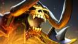
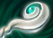

Dota2 Live
Отчет №1
Отчет №2
| Герой | Матчи | Доля побед | УСП | |
|---|---|---|---|---|
 Riki
Riki
|
76 | 75.00% | 4.63 | |
 Bloodseeker
Bloodseeker
|
62 | 51.61% | 2.80 | |
 Juggernaut
Juggernaut
|
48 | 58.33% | 3.18 | |
|  Clinkz | 63 | 55.56% | 2.63 | |
") Sniper
Sniper
|
40 | 65.00% | 4.13 | |
Об игре
Dota 2 — компьютерная многопользовательская командная игра в жанре MOBA(multiplayer online battle arena), разработанная Valve Corporation. Является независимым продолжением карты-модификации DotA для игры Warcraft III. Dota 2 работает по модели free-to-play с элементами микроплатежей.
Создатели
Гейб Логан Ньюэлл— один из основателей и генеральный директор компании Valve, занимающейся разработкой
компьютерных игр и их цифровой дистрибуцией. Является одним из самых известных и богатых людей и находится
на 134 месте рейтинга журнала Forbes.
 Абдул Измаил, более известный как
IceFrog — геймдизайнер, известный за самую долгую поддержку и разработку вплоть до текущего момента
модификации Defense of the Ancients для Warcraft III.
Абдул Измаил, более известный как
IceFrog — геймдизайнер, известный за самую долгую поддержку и разработку вплоть до текущего момента
модификации Defense of the Ancients для Warcraft III.
Создатели DotA 1
Dota 2 вышла как самостоятельная игра при поддержке Valve, ее история уходит корнями как мод-карта к Warcraft 3.
-
Eul - первый создатель доты, который взял идею из модификации для старика и очень сильно доработал её. Он создал 30-45% героев доты. 
-
Неизвестные создатели - многочисленные люди, которые создавали свою версию DotA, после того как Eul выложил исходный код карты.
-
Meian и Ragn0-они взяли всех героев и все изменения "Неизвестных создателей" и вложил их в одну карту.Они улучшили карту, но вскоре покинули пост разработчиков карты.
-
Гуинсо - Продолжитель идей Meian и Ragn0. Он создал тот привычный для нас вид доты, добавил Рошана, Аегис, пасхалки и многое другое. Так же устранил баги, оптимизировал баланс, и создал новых героев. (Недаром одна из его версий считается самой сбалансированой)
-
Neichus - неизвестный, но в тоже время важный человек. Создал пуджа(!!!) и других героев(Earthshaker, Tiny 2.0, Bristleback, Sandking, Axe, Phantom Lancer 2.0, Stealth Assassin 2.0, Ursa Warrior, Broodmother, Shadow Fiend, Nerubian Weaver, Enchantress, Ogre Magi, Tinker, Necro'lic 2.0, Necrolyte, Enigma, и Death Prophet 2.0), исправил многочисленное число других. За свою небольшую работу внес много изменений в героев.
-
True.Rus и Cacodemon, те самые русские, которые делали свою доту. У них Гуинсо и IseFrog спёрли много идей в плане баланса, а так же нескольких героев.
-
IseFrog - тот самый, что был последним. Он внес немного изменений в балансе ,исправил и без того не многочисленные баги. Самое интересное: Ледяная лягушка создала всего несколько самостоятельных героев, самый популярный среди них - Invoker.
-
Создатели с официального сайта доты-Рексара и нескольких других героев создали пользователи (!!!), и кидали их Айсфрогу, а тот добавлял их, но как не странно, авторство писал очень маленькими буквами. Итог: Создателей доты больше пол сотни, но есть двое главных людей: Eul создал больше всех героев, лучше всего дополнил игру Гуинсо.
Обзор профиля
-
Асуна-молния

- Доля Побед: 55%
-